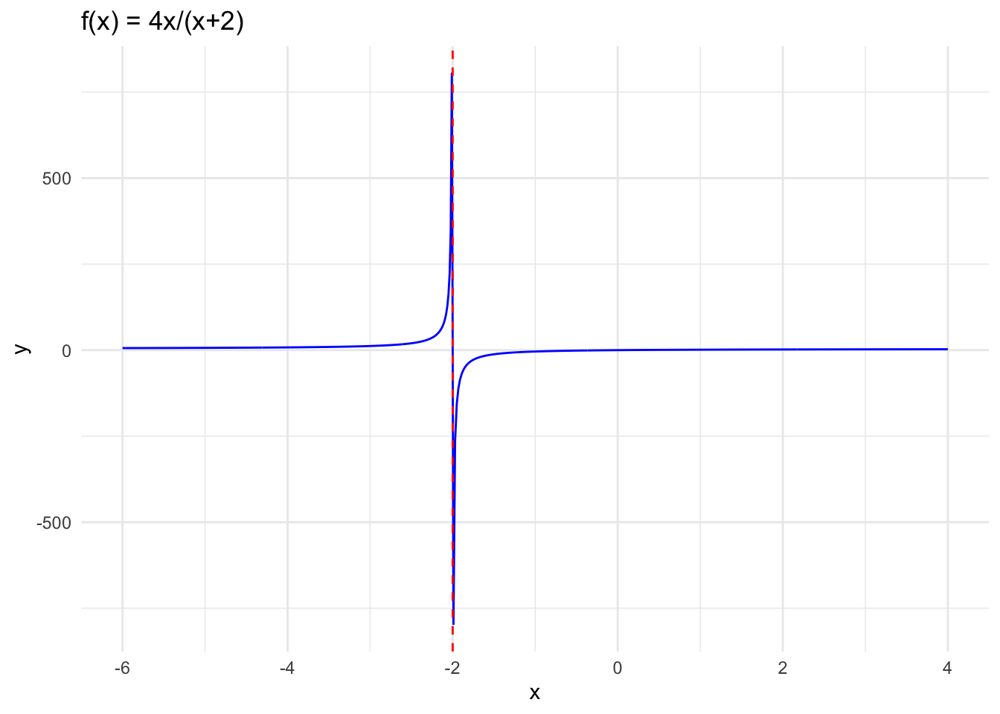
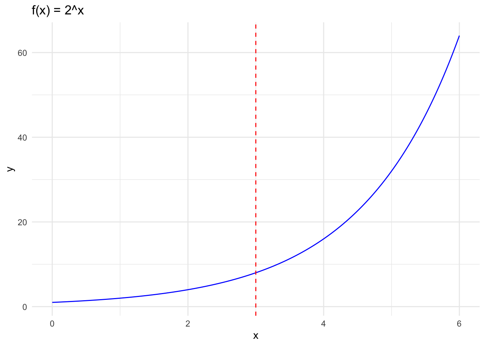
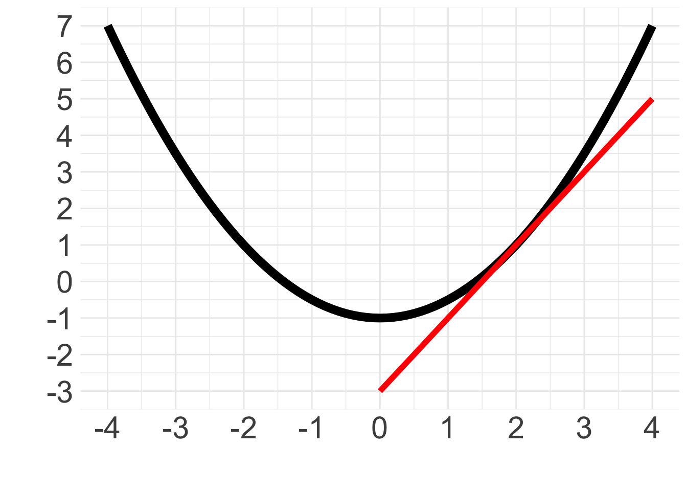

| x | -2.5 | -2.1 | -2.01 | -2.001 | -2.0001 | -2.00001 |
| y | 20.0 | 84.0 | 804.00 | 8004.000 | 80004.0000 | 800003.99999 |
Limits and Derivatives Problem Set Solutions
Answer the following questions to the best of your ability. Attempt exercises on your own first to make sure you fully understand the concepts. Feel free to work with anyone in the cohort after giving the problems a try!
- Which of these graphs depict functions and which do not?
Graphs A,B, and C all fail the vertical line test. Thus they are not functions. Graph D is a function because passes the vertical line test and thus is a function.
- Investigate what is the value of the following limits:
\[ \lim_{x\to -2^-}\frac{4x}{x+2} \]
To investigate this limit we can evaluate the function \(\frac{4x}{x+2}\) from the left with values getting closer to -2. We can see from the approximation below that \(y = \frac{4x}{x+2}\) rapidly increases with values closer to -2. So, we can say the limit goes to infinity.
We can also plot the function to have a visual understanding of its behavior near -2.

\[ \lim_{x\to 3}2^x \]
To investigate this limit we can evaluate the function \(2^x\) with values of \(x\) approaching 3 from the left and the right. The table below shows that the limit approaches 8 at x=3 from both directions, so we can say \(\lim_{x\to 3}2^x=8\).
| x | 2.500000 | 2.900000 | 2.99000 | 2.999000 | 3.001000 | 3.010000 | 3.100000 | 3.50000 |
| y | 5.656854 | 7.464264 | 7.94474 | 7.994457 | 8.005547 | 8.055644 | 8.574188 | 11.31371 |
We can also graph this function and see it is continuous. So \(\lim_{x\to 3}2^x = 2^3 = 8\).

- Determine the value of \(b\) to make \(h(x)\) continuous at \(x=-3\). Explain your reasoning using limits.
\[ h(x)=\begin{cases} bx^2-\frac{3}{2}x-5 &x<-3 \\ -2x-9 &x\ge-3 \end{cases} \]
This function is broken down into two “pieces”: it equals \(bx^2 - \frac{3}{2}x - 5\) when \(x\) is less than -3, and it equals \(-2x-9\) when \(x\) is greater or equal to -3. To connect these two pieces and make \(h(x)\) continuous we need both pieces to approach the same value at \(x=-3\), in other words
\[ -3 = h(x) = \lim_{x\to-3} h(x).\]
Let’s calculate the side limits to see what’s going on with \(\lim_{x\to-3}\). From the left-hand side we have that:
\[\lim_{x\to-3^-} h(x) = \lim_{x\to-3^-} bx^2 - \frac{3}{2}x - 5 = 9b + \frac{9}{2}.\]
From the right-hand side we have that:
\[ \lim_{x\to-3^+} h(x) = \lim_{x\to-3^+} -2x-9 = -3 \]
If we want \(h(x)\) to be continuous at \(x=-3\) we then need
\[ -3 = h(x) = \lim_{x\to-3^-} h(x) = \lim_{x\to-3^+} h(x) = 9b + \frac{9}{2} \]
Solving this equation we obtain that
\[ \begin{align} 9b=\frac{-5}{2}\\ b=\frac{-5}{18}. \end{align} \]
- Calculate the derivative of the following functions then evaluate at the given x:
- \(2x^2+4\) at \(x=-3\)
\[\begin{align} 2x^2+4\\ \frac{d}{dx}=4x\\ \frac{d}{dx(3)}=4(-3)=-12 \end{align}\]
- \(x^4-5x^3+x-5\) at \(x=5\)
\[\begin{align} x^4-5x^3+x-5 \\ \frac{d}{dx}=4x^3-15x^2+1 \\ 4(5)^3-15(5)^2+1=126 \end{align}\]
- \(\frac{5}{x^2}\) at \(x=2\)
\[\begin{align} \frac{5}{x^2}\\ \frac{d}{dx}=-10x^{-3}\\ -10(2)^{-3}=1.25 \end{align}\]
- Find the slope of the tangent line in the graph below at \(x=2\). Describe in words how the slope of the tangent line represents the derivative. Could the tangent line match another point on the curve?

Using rise over run we can take two points on the tangent line to find the slope. The tangent line provides the slope or instaneous rate of change at single point along the curve. Therefore the slope of the tangent line is the derivative. In this graph \(\frac{dy}{dx}=2\) is unique at only x=2. However in other curves, such as sine waves or higher order polynomials, it is possible for different tangent lines to have the same slope
\[ slope=\frac{1--1}{2-1}=\frac{2}{1} \]